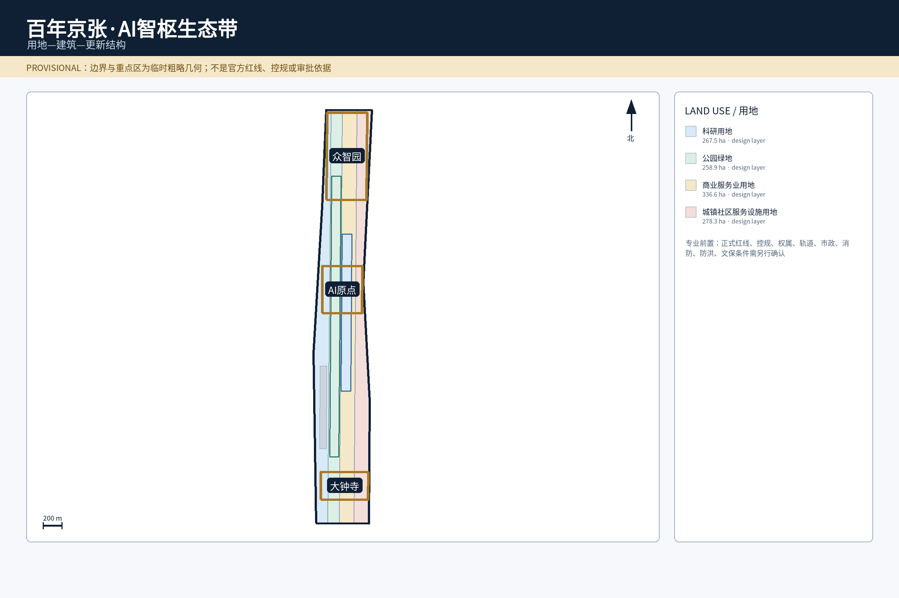
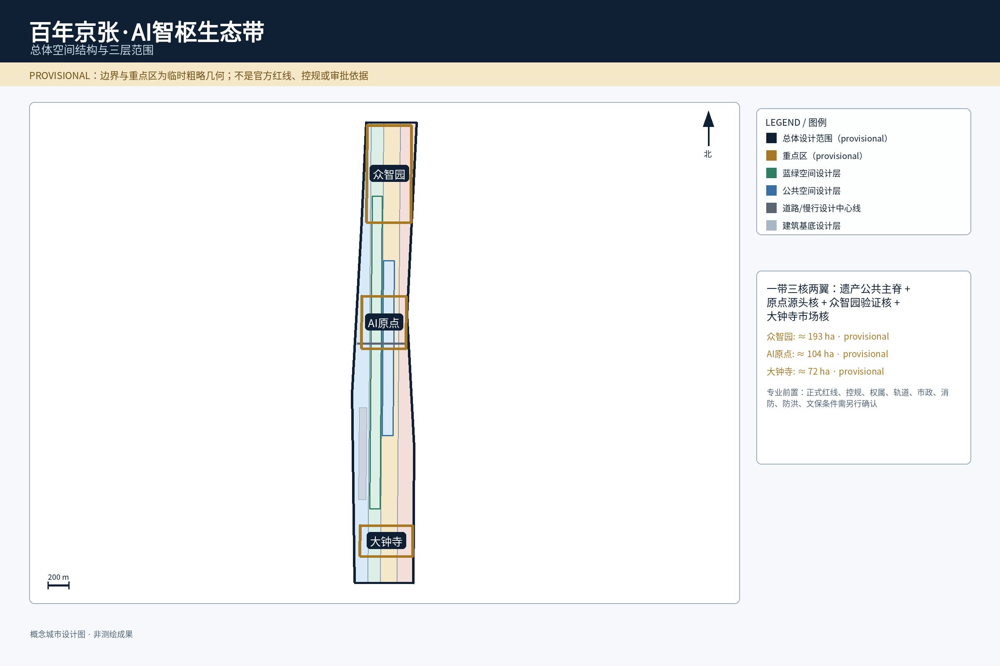
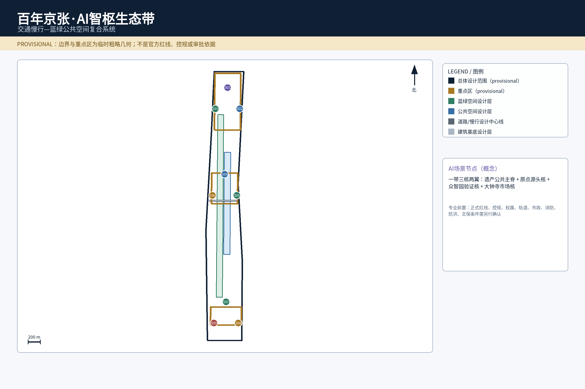
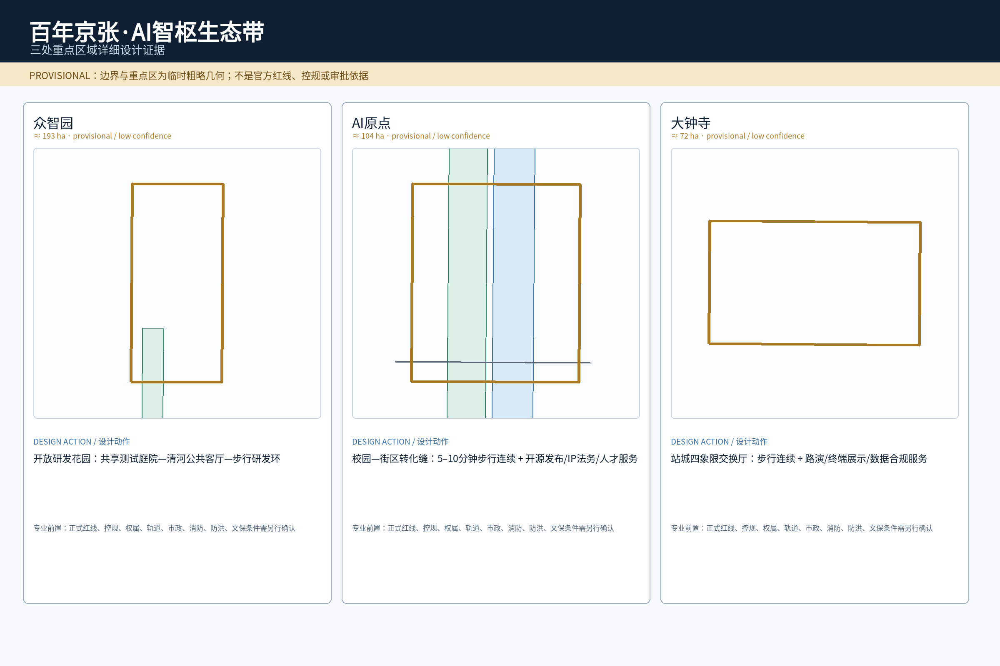
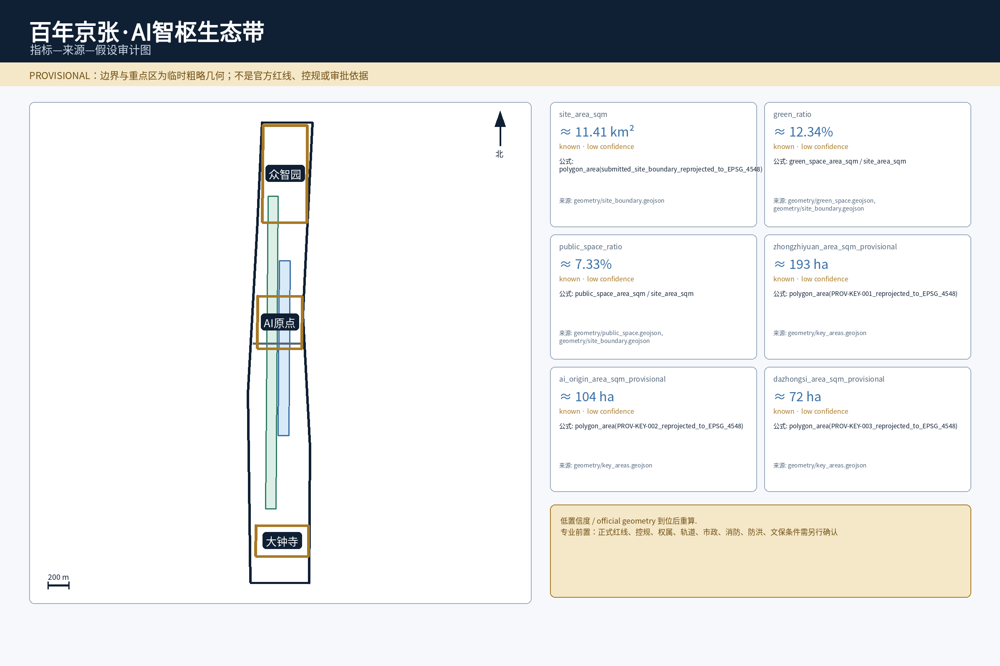

Jing-Zhang Intelligence Commons / JZ·AI Commons；双轨线=铁路记忆，三节点=三核，脉冲=开放知识协作。
原点=源头核；众智园=验证核；大钟寺=市场核；中关村翼补 IP/法务/投融资，小月河翼补社区与公共测试场景。
北纬社区、未来科学城、怀柔科学城、经开区、京津冀只作为概念接口，不声称已签政府合作。

用地分区与建筑基底由本地安全 renderer 从 GeoJSON 重绘；概念图层不等于控规或现状测绘。

总体图显示边界、图例、指北针、比例尺、三核与主要廊道，并醒目标注 provisional 限制。
遗产公园慢行断点缝合；交通/公共空间团队；条件不明只做临时导视。
众智园清河创新界面；河道/防洪/产权/消防为前置。
AI 原点近校成果转化街；权属/首层/消防不成立则缩小范围。
大钟寺四象限步行连通；轨道/道路/管线不足则保留地面策略。
公共服务与端侧算力；能耗/安全不达标时关闭 AI 能力。
全球 AI 活动周公共路线；许可/安全不足即缩线或取消。

轨道接驳 → 京张遗产慢行主脊 → 两翼横向连接 → 三核步行环；ROAD-001 是设计中心线，不是道路红线。
连续步行、无障碍、遮荫休息、生态安全和日常公共性优先于可见 AI 硬件。端侧设施必须可关闭，AI 故障时实体导视与人工服务仍可用。
无手机路线人工窗口可逆设施生态优先
本图显示三处 provisional 边界及局部裁切后的建筑、道路、蓝绿和公共空间关系。
共享测试庭院—清河公共客厅—步行研发环；安全治理沙盒、模型评测、低碳算力与标准工作坊。
5–10 分钟步行连续，首层嵌入开源发布、IP/法务、近校孵化和人才服务。
四象限步行连续、公共客厅、智能终端展示、国际路演与数据合规服务。
自愿代码/模型元数据；检索/摘要；社区运营+人工主持。
授权测试集；评测/红队/日志；测试运营+安全负责人。
设备/环境健康；边缘推理；设施运营+IT。
障碍/坡度/设施状态；路径建议；公共空间+人工服务点。
清权企业资料；多语摘要/字幕；场地运营+人工策展。
环境监测；低功耗提示；公共空间运营。
公开政策/自愿需求；信息匹配；企业服务+专业机构。
授权记录/公开规则；合规解释；专业咨询+场地运营。
公开服务信息；问答/导航；社区服务+专业窗口。
公开活动信息；多语导览；活动运营+公共安全岗位。
定位漂移、断网、状态过期、错误拥堵；非 AI 导视必须维持基本通行。
异常输出、越权数据、高负载；要求人工停止、日志追溯和测试域隔离。
低置信度/冲突教育、医疗、法律问题；高影响事项必须升级人工。
创新与住房、零售、公共空间、交通共存 → 不做封闭园区。
研究人才连接产业采用 → 原点/众智园/大钟寺形成源头—验证—市场链。
项目、伙伴服务、活动持续运营 → 从租空间转向项目运营。
工作—生活、基础设施与测试床结合 → 人才生活与测试邻近。
城市级企业/人才支持 → 公开可预约企业与测试接口。
大学研究锚点、开放科学与创业转化 → 开源发布进入可步行街区。
铁路里程节奏 + 开源贡献时间轴的步行知识门廊。
可更新贡献墙；人工审核、可更正、可撤回。
可预约、可撤场的安全/无障碍/低碳/公共服务原型空间。
文化叙事：铁路把知识带进城市 → 中关村把知识变成创新 → AI 时代把知识变成公共协作能力。国际传播固定标注 Concept Proposal / Provisional Geometry / Not Approved for Construction。
开源发布、贡献者署名与内容撤回机制。
安全、无障碍与公共服务小样测试。
国际路演和公共路线；许可或安全不足即缩线/取消。
人工复核、复盘、退出和下一年度改进。
公告 1.3/1.4/1.5 与 agent.1–agent.6 已分别在 `compliance_matrix.json` 映射到专属章节、图层、指标、来源和可视化位置。这里不声明“100% 已通过评审”。
场地事实回到 `brief/site-package/` 与官方公告；6 个全球案例仅作比较研究并登记于 `sources.json`。
`A-BOUNDARY-001`：总体与重点区为 provisional rough geometry；`A-CONTROLS-001`：控规、道路、权属、市政、防洪、消防、文保待正式资料。
PASS / FORMAL-REVIEW-READY。`manifest.json` 为 `self_checked:true`，`self_check.json` 记录四门禁通过；这只证明当前提交通过本地检查，不代表组织方批准。

指标图显示来源、公式、置信度和 provisional 警示。
总体图显示边界、节点、廊道、图例、北针和比例尺。
重点区图显示三处 provisional 边界和内部空间关系。
交通慢行与蓝绿公共空间叠合图。
用地分区、建筑基底与更新结构图。